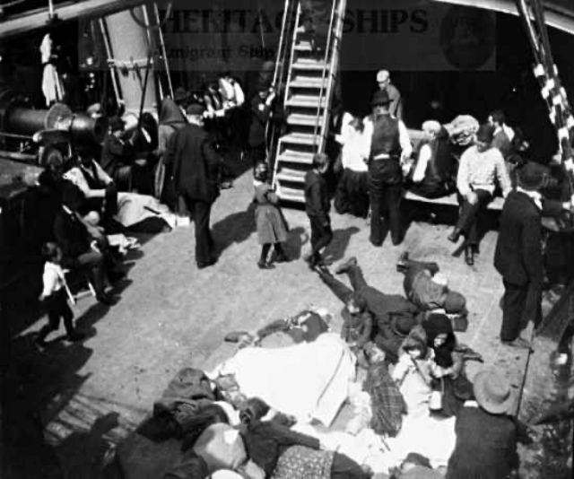
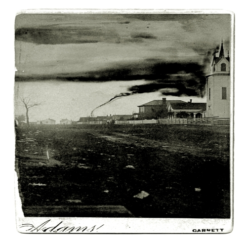

This is the History of the Kleinsorge Farm in Nierentrop, Germany according to author Josef Lauber - 1978
The Kleinsorge Name from 1470 A.D.-Today
Immigrating to America

Locust Point, Baltimore, MD
Theodor's Point of Entry
Theodor's Point of Entry

SS Hermann - 3 weeks to cross the Atlantic
Theodor's transportation to America
Theodor's transportation to America

Officer's Meeting
on the after-deck of the SS Hermann
on the after-deck of the SS Hermann

Steerage Class on the SS Hermann
This was
This was
not First Class

Locust Point, Baltimore, MD
Transfer from ship to railroad
Transfer from ship to railroad
Theodor comes to America


Tornado was 19 mi from Garnett, Ks.
Touchdown was about 3 miles north of Westphalia
Touchdown was about 3 miles north of Westphalia
Westphalia's other
"Claim to Fame"
"Claim to Fame"

Facing south from Garnett, Ks
4-26-1884
4-26-1884
This is how they pronouce "Kleinsorge" in Germany
Male
Female
A little history of our surname!
20 min slideshow